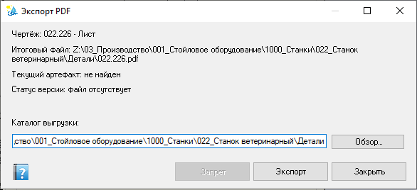

Экспорт PDF
Диалог выгрузки PDF для текущего чертежа: итоговый файл, статус версии артефакта и каталог выгрузки. Пакетный режим по сборке — PDF пакет.

Сводка по чертежу и итоговому файлу, статус текущего артефакта/версии, каталог выгрузки с «Обзор…»; кнопки Запрет, Экспорт, Закрыть.
Когда появляется
Одиночный экспорт чертежа (в т.ч. из сценариев помощника / экспорта документации). Для массовой обработки состава сборки используйте пакетную диагностику.
Элементы окна
| Элемент | Назначение |
|---|---|
| Чертёж | Имя чертежа / листа, который будет выгружен. |
| Итоговый файл | Полный путь ожидаемого PDF. |
| Текущий артефакт | Что уже учтено системой (или «не найден»). |
| Статус версии | Состояние файла относительно чертежа (например, «файл отсутствует», устарел и т.п.). |
| Каталог выгрузки + Обзор… | Папка назначения. Канонический путь связан со свойством «Путь pdf»; при другом каталоге система предложит обновить канонический путь или скопировать PDF. |
| Экспорт | Выполнить выгрузку. |
| Запрет | Отклонить операцию намеренно (учёт отказа помощником). Может быть недоступна вне сценария с запретом. |
| Закрыть | Выход без экспорта. |
Порядок работы
- Сохраните чертёж на диск — иначе экспорт может быть недоступен или результат устареет сразу после сохранения.
- Проверьте итоговый файл, статус артефакта и каталог выгрузки.
- При необходимости смените каталог через «Обзор…».
- Нажмите Экспорт (или Запрет, если нужно отклонить).
«Запрет» — осознанный отказ от операции, а не ошибка SOLIDWORKS. Не путать с «Закрыть».